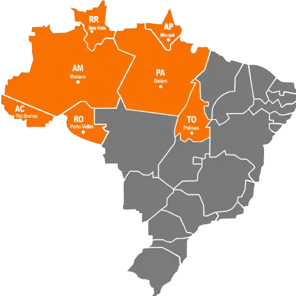
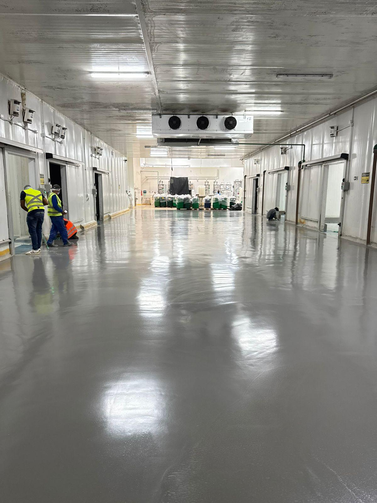
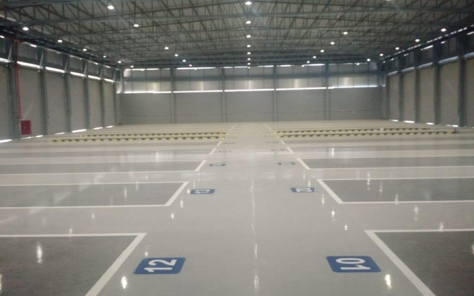
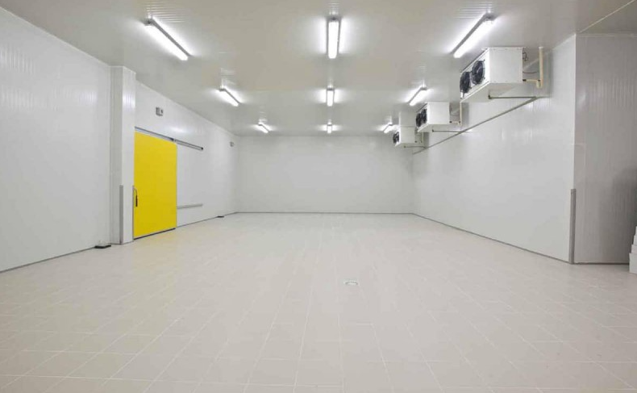
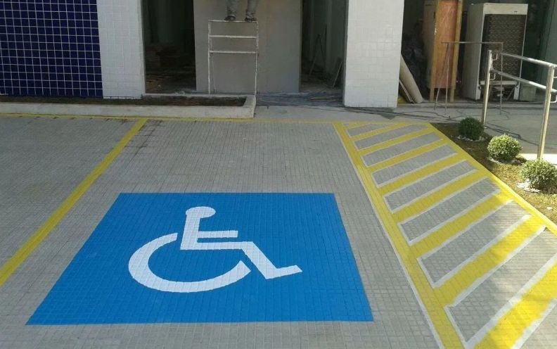
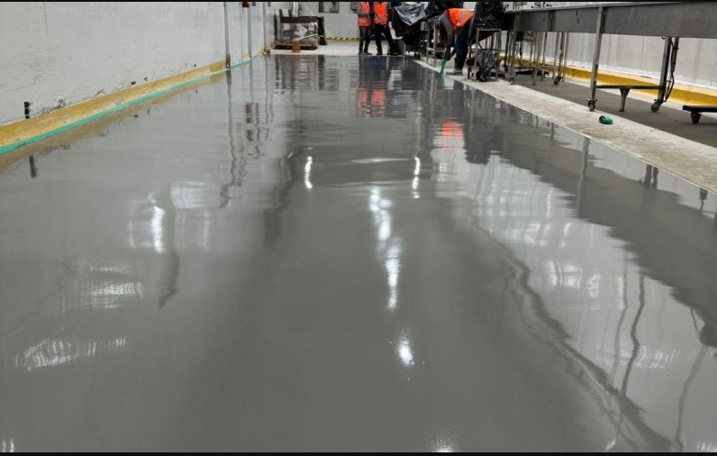

Recuperacao de pisos danificados
Correcoes em superficies desgastadas, quebradas ou comprometidas pela rotina industrial.
Atendemos galpoes, industrias, centros logisticos e areas de alto trafego com solucoes para correcao, protecao e acabamento de pisos.
Correcoes em superficies desgastadas, quebradas ou comprometidas pela rotina industrial.
Reparo tecnico para reduzir infiltracoes, quebras, desniveis e pontos de fragilidade.
Melhoria visual e funcional do piso com acabamento uniforme, limpo e profissional.
Preparacao da base para melhor circulacao, seguranca operacional e aplicacoes futuras.
Aplicacoes para protecao, resistencia quimica, acabamento tecnico e organizacao visual.
Planos e intervencoes para aumentar a vida util do piso e evitar paradas inesperadas.
A North Pisos e especializada em recuperacao, manutencao e revitalizacao de pisos industriais, atendendo operacoes que exigem resistencia, seguranca e acabamento profissional.
Anos de atuacao
Empreendimentos finalizados
Clientes atendidos

A North Pisos e uma empresa especializada em recuperacao, manutencao e revitalizacao de pisos industriais, atuando com excelencia em diversos segmentos como logistica, alimenticio, farmaceutico, atacadista, automobilistico e agronegocio.
Com uma equipe tecnica altamente capacitada e mais de 15 anos de experiencia no mercado, oferecemos solucoes duraveis e eficientes para pisos que exigem resistencia, seguranca e acabamento profissional.
Entregar resultado com qualidade e agilidade, respeitando prazos, normas tecnicas e as condicoes especificas de cada cliente, desde o diagnostico da patologia do piso ate a entrega final da obra.
Levamos soluções técnicas para pisos industriais em obras comerciais, galpões, centros logísticos, indústrias e áreas de alto tráfego em toda a região Norte.

Proteção, acabamento e resistência para ambientes industriais.
Tratamento técnico para melhorar brilho, resistência e durabilidade.
Aplicação para proteger o concreto e reduzir desgaste prematuro.
Soluções técnicas para pisos industriais, comerciais e áreas de alto desempenho.

Revestimento contínuo, resistente e fácil de limpar.

Tratamento para reduzir trincas e aumentar a vida útil.
Acabamento resistente, uniforme e de alto padrão.

Base preparada para tráfego intenso e operação logística.

Solução para ambientes com baixa temperatura e alta exigência.

Sinalização técnica para segurança e organização da área.
Atendemos operações que precisam de pisos resistentes, seguros e preparados para alta demanda.
O prazo depende da área, do estado do piso e do tipo de solução aplicada. Após a avaliação técnica, definimos um cronograma para reduzir ao máximo a parada da operação.
Sim. Em muitos casos, conseguimos trabalhar por etapas, isolando áreas específicas e mantendo parte da operação ativa durante o serviço.
Sim. Atuamos em ambientes industriais, comerciais, logísticos, alimentícios, farmacêuticos e áreas de alto tráfego.
A escolha depende do uso da área, tráfego, umidade, resistência química, acabamento desejado e condição atual do piso. Por isso recomendamos uma avaliação técnica.
Preferencialmente sim. A visita permite entender a necessidade real da obra e indicar uma solução mais segura, durável e compatível com a operação.
Conte rapidamente o tipo de área, metragem aproximada e a necessidade do piso. Nossa equipe retorna com orientação comercial e próximos passos.
Segunda a sexta, horário comercial
Atendemos todo o Norte do Brasil
contato@northpisos.com.br